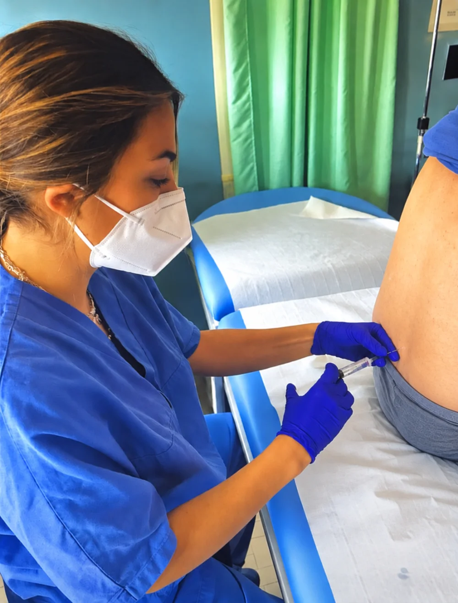

Il dolore che resiste alle cure non va sopportato. Va indagato e curato.
Sono specialista in Anestesia, Rianimazione e Terapia del Dolore. Visito chi ha un dolore acuto o cronico alla schiena, alle articolazioni, ai nervi o dopo un intervento, per risalire alla causa e trattarla con farmaci, infiltrazioni e altre tecniche.
Cagliari · Sassari · Consulenza online

Perché rivolgersi a uno specialista del dolore.
Un dolore che dura, o che non cede ai farmaci di base, non va sopportato in silenzio: è un sintomo, e come tale va capito.
Il terapista del dolore valuta il dolore acuto o cronico, ne cerca la causa e sceglie con te il trattamento. Si parte da una visita con test diagnostici: per questo è utile portare esami e documentazione che hai.
Ti visita una specialista in Anestesia, Rianimazione e Terapia del Dolore, oggi in servizio all'Ospedale Oncologico Businco di Cagliari, con esperienza ospedaliera ad Alessandria, a Chivasso e a Olbia.
«Ma la grande, la tremenda verità è questa: soffrire non serve a niente.»
Come si svolge la prima visita
-
Colloquio
Mi racconti il dolore: da quando c'è, dove, cosa lo peggiora, cosa hai già provato.
-
Visita e test
Con manovre e test diagnostici valuto l'entità del dolore e cerco di identificarne la causa.
-
Terapia
Scegliamo insieme come trattarlo: farmaci, infiltrazioni, ozonoterapia, terapie rigenerative o altre tecniche.

Ossigeno-ozono terapia
Una miscela di ossigeno e ozono, iniettata dove serve. Una tra le terapie che propongo, per ernie del disco, dolori articolari, cervicalgia e lombalgia.
Consulenza online
Una visita in videochiamata, dal computer o dallo smartphone, prenotata dall'agenda su MioDottore. La prima visita prevede in genere un esame fisico: per sapere se il tuo caso è adatto, chiedi in agenda o per telefono.